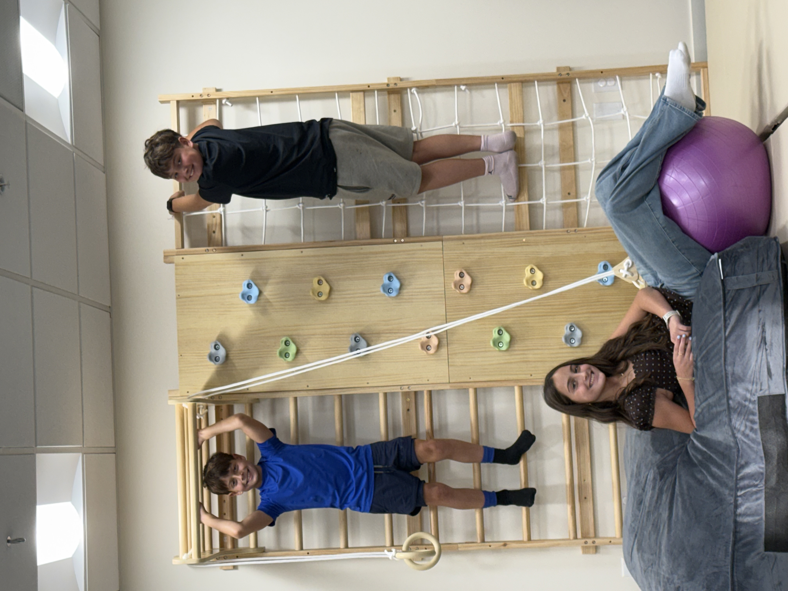

Pediatric Occupational Therapy for Little Miracle Workers
From torticollis to developmental delays, we're here to make every step of the way a fun adventure for your child.

Explore Our Tailored Therapy Services
Playful, expert care built around your child's unique needs.

Pediatric Therapy Magic
Specializing in pediatric occupational therapy for newborns, we work to unlock your little one's potential with fun and engaging activities.

Torticollis Support
Got a tiny neck tilt? Our playful approach helps treat torticollis in infants, guiding them toward comfort and better head control.

Brachial Plexus Recovery
We create vibrant therapy experiences that promote healing and skill development after a brachial plexus injury.

Developmental Delay Help
From crawling to climbing, we're here for developmental delay therapy, supporting toddlers in their growth milestones!
Plagiocephaly Solutions

Pediatric Occupational Therapy for Newborns and Toddlers
Lauren Cardoni, OTR/L, MS — Director/Owner
Our mission: where every child's next step becomes possible.
At Mighty Miracles Therapy, we specialize in brightening the lives of your little ones. Whether your baby is dealing with torticollis, plagiocephaly, or a brachial plexus injury, our expert therapists are here to provide personalized care that meets their unique needs. Think of us as your trusty sidekicks, helping your child reach their milestones with joy and happiness! Our sessions are fun, engaging, and tailored to each child's requirements—watch them giggle and thrive as they play while we work our magic!
For those navigating developmental delays or complex medical challenges, we've got your back every step of the way! Our team uses playful, hands-on techniques to support toddlers in reaching their fullest potential. Whether it's building strength or fostering communication skills, our goal is to create a nurturing environment where progress blooms. With 17 years of experience, we understand the importance of a supportive approach as we partner with you and your family on this incredible journey. Together, let's make every tiny miracle happen!
"Lauren is an unbelievable OT! She has worked with my daughter for 8+ years and has always gone above and beyond in providing her with the best care. I would trust her with literally anything at this point! My daughter looks forward to her weekly appointments and has a beautiful bond with Lauren. We don't know what we would do without her!"
Laura O.
"My son saw Lauren for occupational therapy from nearly birth until we moved out of state two years later, attending sessions twice a week. She was not only incredibly professional and knowledgeable, but she also made every visit feel comfortable and welcoming for our family. Because of our son's rare neurological disease, finding someone with the skills, patience, and dedication to support his unique needs was so important, and Lauren exceeded every expectation. We are incredibly grateful for everything she did for our son! Highly recommend Lauren!"
Kimberly P.
"AMAZING! Lauren worked with my son for over a year from 3 months old to 17 months. She's a natural with children (especially babies) and provided not only him with relief but also us, his parents. She always gave us tips for home care and had new ideas when needed! Lauren is kind, funny, supportive, and genuinely cares about her patients. I would recommend Lauren to anyone. Lauren is the best!"
Lexi T.
"Lauren helped treat my daughter for torticollis, beginning when she was just a few months old, and also helped assess my son, who had some sensory difficulties as a young toddler. She is an expert in child development in all areas: gross and fine motor skills, sensory processing, play and social skills. Without her, I don't believe my children would have hit their milestones when they did. Thank you to Lauren! I recommend her with the utmost confidence!"
Bonnie C.
Let's clear up a few things!
What types of therapy do you offer for newborns?
At Mighty Miracles Therapy, we focus on a range of specialized services including pediatric occupational therapy for newborns, treatment for torticollis in infants, and therapy for serious conditions like brachial plexus injuries. Everything is designed to help your little one thrive!
How do I know if my child needs therapy?
If you notice delays in your child's milestones or any specific challenges, it's a good idea to consult with us. We love to help parents understand if therapy could benefit their kiddos through a friendly chat and assessment.
What can I expect during a therapy session?
Expect fun! Our sessions are super interactive, using colorful tools and play to promote development. Your child will feel engaged and happy while working on important skills!
How much does therapy cost?
Therapy costs can vary based on the services needed and session frequency. We believe in transparency, so we'll discuss pricing details upfront during our initial consultation to ensure you feel informed and confident.
How long will therapy take?
Each child is unique, so the length of therapy depends on individual needs and progress. We'll work together to set goals and check in regularly to celebrate all those little victories!
Do you provide support for parents as well?
Absolutely! We're here to support not just your child, but you as a parent too. We provide guidance, resources, and tips to help you navigate your little one's journey.
Is there a guarantee my child will improve with therapy?
While we can't predict every outcome, we can promise our commitment and expertise in helping your child reach their potential. Many parents see positive changes, and we're right there with you every step of the way!
Can I schedule an appointment online?
Yes! Scheduling an appointment is a breeze. You can hop onto our website anytime to book a session with us or give us a call for a chat!
Let's Connect!
Reaching out is as easy as sending a text to a friend.
Location:
31 Upper Ragsdale Drive, Suite 150
Monterey, CA 93940
Phone: 831-731-5688
Fax: 831-298-5586
Have a question, or ready to get started? Send us an email at melissa@mightymiraclestherapy.com and we'll get back to you soon.
Email Usor call 831-731-5688